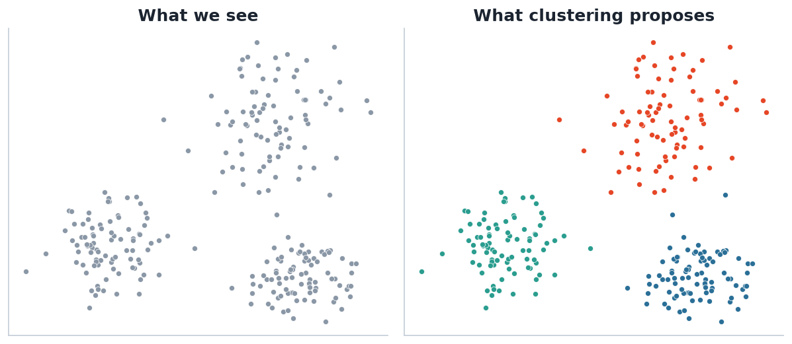
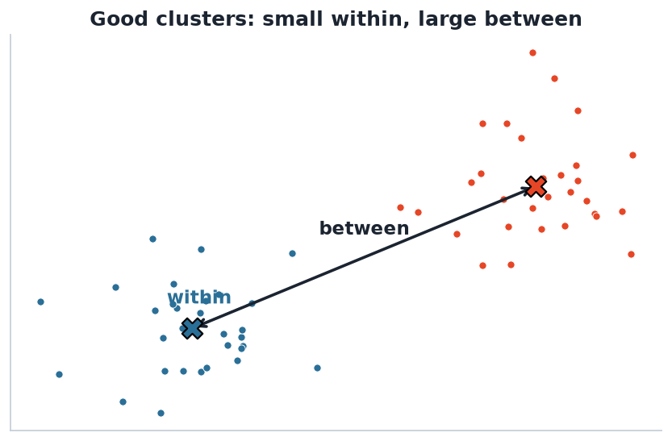

Finding groups in data when nobody tells you the labels.

From an unlabelled cloud (left) we propose a partition into groups (right). There is no ‘true’ answer to check against — clustering is exploratory.
Instead of studying 50 nutrients one at a time, group people into a few eating patterns (e.g. ‘prudent’ vs ‘Western’) and study those.
Cluster participants by metabolite profiles to reveal subgroups that respond differently — a hypothesis generator for the project.
A clustering algorithm needs a way to say how far apart two observations are.
Euclidean — straight-line, the default.
Manhattan — sum of absolute differences, robust.
Correlation — shape not magnitude (good for profiles).
Distance is scale-sensitive — standardise first (Lecture 02!). The metric encodes what you mean by ‘similar’, so choose it deliberately.

We want points close to their own centre (small within-cluster variation) and centres far apart (large between-cluster variation).
Most algorithms minimise within-cluster variation. Adding clusters always reduces it — so we need principled ways to choose the number of clusters (Lecture 04).
| Family | Idea | This unit |
|---|---|---|
| Partitioning | Split into k groups minimising within-SS | k-means (L04) |
| Model-based | Data from a mixture of distributions | GMM (L05) |
| Hierarchical | Build a tree of nested groups | agglomerative (L06) |
| Density-based | Clusters = dense regions | DBSCAN (mentioned) |
Two participants have daily intakes (energy kJ, vitamin C mg):
A = (8000, 60), B = (8000, 120), C = (16000, 60)